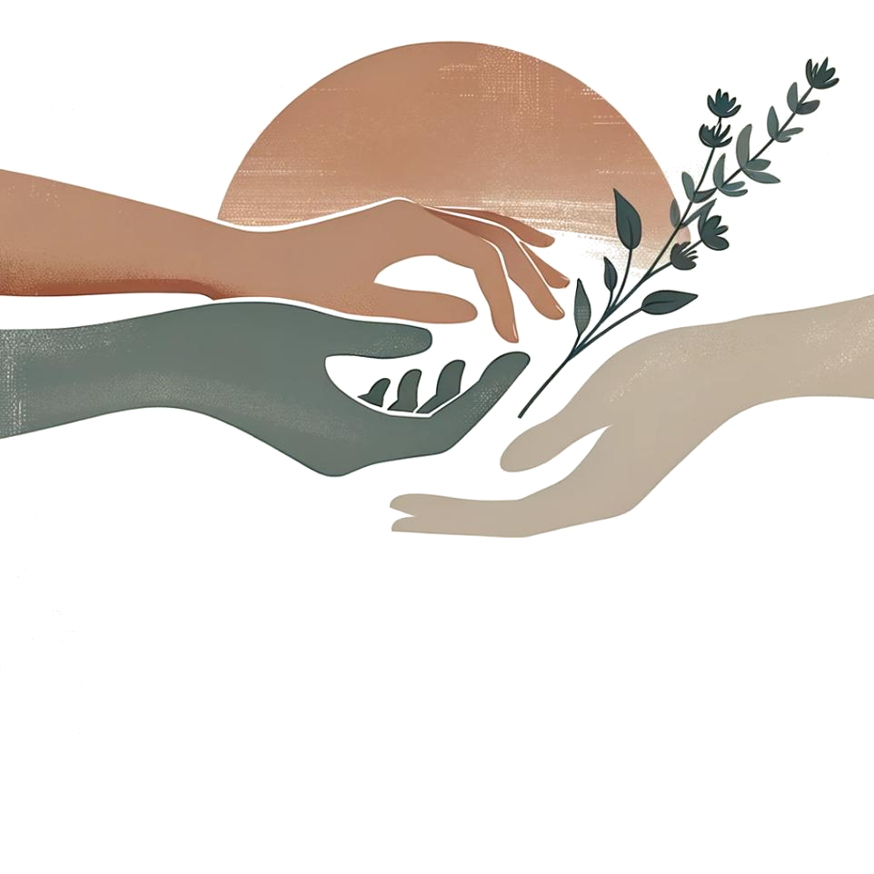

Há apoio em cada passo da sua jornada.
Receber cuidado também é importante. Encontre orientações sobre rede de apoio, saúde emocional, rotina e caminhos para buscar ajuda quando precisar.
Ninguém precisa atravessar tudo sozinha.
Rede de apoio
Pessoas de confiança e pequenos gestos podem fazer diferença.
Receber a notícia de uma síndrome ou condição genética Informação, acolhimento e tempo para compreender cada situação.
Uma suspeita ou diagnóstico pode trazer medo, dúvidas, tristeza, alívio por encontrar respostas ou vários sentimentos ao mesmo tempo. Não existe uma reação obrigatória. Seu bebê continua sendo uma pessoa única, digna de amor, respeito e oportunidades.
As necessidades variam muito de uma criança para outra, mesmo quando têm a mesma síndrome. Algumas precisam de consultas e terapias frequentes; outras têm demandas diferentes. Evite prever o futuro apenas pelo nome do diagnóstico.
- Peça que a equipe explique o resultado em linguagem simples e por escrito.
- Pergunte se é uma suspeita de rastreamento ou um diagnóstico confirmado.
- Solicite orientação sobre especialistas e acompanhamento individualizado.
- Converse com pessoas de confiança, sem se sentir obrigada a contar a todos imediatamente.
Fonte: ACOG — exames diagnósticos e aconselhamento .
Receber uma notícia inesperada pode despertar medo, dúvidas, tristeza ou esperança ao mesmo tempo. Peça que a equipe explique o que foi confirmado, o que ainda é apenas suspeita e quais profissionais podem acompanhar a família, sem pressionar decisões imediatas.
Onde encontrar apoio e acompanhamento para seu bebê? UBS, equipes especializadas, reabilitação e rede de apoio.
Você não precisa descobrir todos os cuidados sozinha. A Unidade Básica de Saúde (UBS) pode ajudar a organizar o acompanhamento da criança e orientar encaminhamentos conforme as necessidades identificadas.
- Acompanhamento de saúde: consultas de rotina, vacinação, avaliação do desenvolvimento e profissionais especializados quando indicados.
- Desenvolvimento e reabilitação: conforme cada caso, podem ser indicados fisioterapia, fonoaudiologia, terapia ocupacional e outros cuidados. O SUS conta com uma rede de atenção à pessoa com deficiência e Centros Especializados em Reabilitação (CER).
- Família e cotidiano: dividir tarefas, buscar apoio emocional e conhecer famílias com experiências semelhantes pode ajudar. A criança também precisa de brincadeiras, convivência e afeto.
A existência de uma síndrome não significa automaticamente que a criança precise de todas as terapias. O plano de cuidado deve considerar sua saúde, desenvolvimento, contexto e escolhas da família.
Fontes: Ministério da Saúde — saúde da pessoa com deficiência e Ministério da Saúde — CER .
A UBS pode coordenar encaminhamentos para pediatria, genética clínica, reabilitação e outros serviços quando indicados. Solicite um plano de acompanhamento por escrito e pergunte quais sinais justificam retorno antecipado.
Como construir uma rede de apoio? Comece pelas pessoas com quem você se sente segura. Uma rede pode incluir familiares, amizades, vizinhos, profissionais de saúde e grupos comunitários.
Convide alguém para conversar sobre o que você precisa, sem obrigação de aceitar conselhos ou visitas.
- Liste duas ou três pessoas com quem você pode contar.
- Combine uma forma simples de pedir ajuda, como uma mensagem curta.
- Defina limites claros sobre visitas, comentários e decisões pessoais.
Para entender melhor
Apoio também significa dividir tarefas e oferecer descanso, não apenas visitar o bebê. Vale combinar antecipadamente quem pode ajudar com transporte, alimentação, consultas ou cuidados com outras crianças.
Uma rede não precisa ser grande: uma pessoa de confiança, uma vizinha, um serviço de saúde ou um grupo comunitário já podem fazer diferença. Priorize ajuda concreta e respeitosa, sem cobranças sobre como a família deve viver essa fase.
Como pedir ajuda de forma prática? Pedidos específicos facilitam que outras pessoas saibam como contribuir.
Você pode solicitar uma refeição, uma ida à farmácia, companhia em uma consulta ou alguém para cuidar de tarefas domésticas.
- Diga exatamente o que seria útil e quando.
- Aceite apenas o apoio que respeita suas escolhas.
- Lembre que pedir ajuda não diminui sua autonomia.
Para entender melhor
Experimente pedidos objetivos: “Você pode me acompanhar à UBS na terça?” ou “Consegue trazer uma refeição pronta?”. Pedidos específicos facilitam que as pessoas saibam como colaborar.
Pedidos específicos costumam ser mais fáceis de atender: “você pode trazer uma refeição?”, “pode me acompanhar à consulta?” ou “pode ficar com o bebê enquanto descanso?”. Você não precisa justificar exaustivamente por que precisa de cuidado.
E quando não tenho apoio familiar? Sua rede não precisa ser formada apenas por parentes. Serviços de saúde, assistência social e grupos de convivência também podem oferecer acolhimento.
Uma Unidade Básica de Saúde (UBS) pode orientar sobre serviços disponíveis no seu território.
- Procure a UBS de referência.
- Pergunte sobre grupos de gestantes e puérperas.
- Se necessário, busque orientação no CRAS sobre apoio social.
Para entender melhor
A UBS e os serviços socioassistenciais podem ajudar a identificar recursos comunitários. Redes de apoio também podem incluir amizades, vizinhos e grupos de convivência.
Como estabelecer limites sem culpa? Você tem o direito de escolher quem participa de momentos íntimos e de dizer não a visitas ou comentários que causem desconforto.
Uma frase simples pode ajudar: “Agradeço o carinho, mas agora precisamos de descanso”.
- Combine previamente regras de visita com quem mora com você.
- Peça a alguém de confiança para ajudar a comunicar os limites.
Para entender melhor
Você pode limitar visitas, horários e exposição do bebê. Frases simples como “Hoje precisamos descansar” ajudam a comunicar o que sua família necessita.
Para cuidados em cada etapa, consulte Fases ; para garantias legais, consulte Direitos .
Seus sentimentos também merecem cuidado.
Saúde emocional
Escuta, informação e acompanhamento fazem parte do bem-estar.
É normal sentir emoções contraditórias? Gestação e pós-parto podem reunir alegria, medo, cansaço, irritação e insegurança. Não existe uma única maneira correta de sentir.
Se o sofrimento for intenso, persistente ou dificultar sua rotina, vale procurar avaliação profissional.
- Converse com alguém de confiança.
- Compartilhe suas preocupações no pré-natal ou na consulta pós-parto.
Para entender melhor
Sentir alegria e medo ao mesmo tempo não significa falta de amor. Observe se o sofrimento permanece, aumenta ou impede atividades importantes, pois nesses casos é adequado buscar ajuda.
É possível amar o bebê e, ao mesmo tempo, sentir cansaço, irritação ou saudade da vida anterior. Esses sentimentos não definem seu valor como mãe ou cuidadora. Se estiverem intensos, persistentes ou dificultarem a rotina, vale buscar avaliação.
Como reconhecer que preciso de apoio profissional? Tristeza persistente, ansiedade intensa, desesperança, dificuldade importante para dormir mesmo quando há oportunidade ou perda de interesse nas atividades são motivos para buscar ajuda.
Profissionais da UBS podem fazer uma primeira avaliação e orientar o encaminhamento à rede de saúde mental.
- Não espere chegar ao limite para procurar atendimento.
- Peça ajuda para marcar uma consulta ou ir acompanhada, se desejar.
Para entender melhor
A equipe pode avaliar sintomas, sono, alimentação, rede de apoio e possíveis condições de saúde mental. Pedir ajuda cedo costuma facilitar o cuidado.
Qual é a diferença entre tristeza passageira e depressão pós-parto? Oscilações emocionais leves nos primeiros dias após o nascimento podem ocorrer. Já sintomas intensos ou persistentes, especialmente por mais de duas semanas, precisam de avaliação.
Somente um profissional pode avaliar e orientar o tratamento adequado.
- Se você sente que não está conseguindo lidar, procure atendimento mesmo antes de duas semanas.
- Se houver risco imediato de ferir a si mesma ou a outra pessoa, procure emergência ou ligue 192.
Para entender melhor
O baby blues tende a melhorar em até duas semanas. Depressão pós-parto pode causar tristeza persistente, perda de interesse, culpa excessiva e dificuldade para realizar tarefas.
Oscilações emocionais nos primeiros dias podem acontecer, mas tristeza persistente, desesperança, ansiedade intensa ou perda de interesse merecem acolhimento profissional. Se houver pensamentos de se machucar ou machucar o bebê, procure ajuda imediata e não fique sozinha.
Onde buscar acolhimento emocional? Você pode começar pela UBS, que integra a rede do SUS. Dependendo da necessidade, pode haver encaminhamento para outros serviços, como CAPS.
O CVV oferece apoio emocional gratuito pelo telefone 188, 24 horas por dia, no Brasil.
- Em urgência de saúde, procure UPA, pronto-socorro ou SAMU 192.
- Para conversar e ser ouvida, ligue 188 ou acesse cvv.org.br.
Para entender melhor
Você pode procurar a UBS, pedir avaliação e solicitar informações sobre psicologia ou serviços especializados. O acesso depende da organização da rede local.
Baby blues e depressão pós-parto Entenda as diferenças e quando buscar atendimento
O que é baby blues?
Choro fácil, irritabilidade e oscilações de humor podem aparecer nos primeiros dias após o parto e geralmente melhoram em até duas semanas. Apoio e descanso ajudam, mas sofrimento intenso merece atenção.
E a depressão pós-parto?
Pode causar tristeza persistente, perda de interesse, culpa, desesperança, ansiedade ou dificuldade para realizar tarefas. Não é falta de amor nem fraqueza. Há tratamentos, como psicoterapia e medicamentos avaliados individualmente.
Quando é urgente?
Pensamentos de suicídio ou de machucar a si mesma ou o bebê, delírios, alucinações ou confusão intensa exigem atendimento de emergência. No Brasil, acione o SAMU 192 se houver risco imediato.
Referência institucional: Ministério da Saúde . As orientações devem ser individualizadas pela equipe de saúde.
Para entender melhor
Se os sintomas forem intensos, persistirem por mais de duas semanas ou houver dificuldade importante para cuidar de si, procure avaliação. Confusão, alucinações ou risco de autolesão exigem urgência.
Ansiedade e depressão durante a gestação Sinais que merecem escuta e cuidado
O que observar?
Preocupação difícil de controlar, tristeza persistente, medo intenso, perda de interesse e sintomas que atrapalham sono, alimentação ou rotina podem indicar necessidade de avaliação. Nem todo sofrimento emocional se explica por hormônios.
Como pedir ajuda?
Você pode dizer à equipe: “Tenho me sentido muito preocupada e isso está afetando minha rotina”. A UBS pode orientar avaliação e encaminhamento conforme a necessidade.
Referência institucional: Ministério da Saúde . As orientações devem ser individualizadas pela equipe de saúde.
Para entender melhor
A ansiedade pode se manifestar como preocupação constante, medo intenso ou dificuldade de dormir; a depressão pode envolver perda de interesse e desesperança. Tratamentos são individualizados e podem incluir psicoterapia.
Onde procurar ajuda emocional? UBS, rede de saúde mental e urgências
Por onde começar?
A UBS é porta de entrada para conversar sobre ansiedade, tristeza, medo e outras dificuldades. Conforme a situação, a rede pode oferecer acompanhamento e encaminhamento aos CAPS ou outros serviços.
E em uma crise?
Em risco imediato, procure emergência ou ligue 192. O CVV oferece apoio emocional pelo 188, mas não substitui atendimento de urgência.
Referência institucional: Ministério da Saúde . As orientações devem ser individualizadas pela equipe de saúde.
Para entender melhor
No SUS, comece pela UBS. Em situações de urgência, procure UPA ou emergência. Para risco imediato, ligue 192. O CVV atende pelo 188 para escuta emocional.
A UBS é uma porta de entrada para avaliação e encaminhamento na rede de saúde mental. Em situação de risco imediato, procure uma UPA ou serviço de emergência; para conversar em momentos de sofrimento, o CVV atende pelo 188.
O cuidado também acontece nas pequenas coisas.
Apoio no dia a dia
Descanso, alimentação e divisão de tarefas ajudam a tornar a rotina mais possível.
Como dividir os cuidados com o bebê? Sempre que possível, compartilhe tarefas de higiene, organização, alimentação da família e acompanhamento de consultas.
Mesmo quando uma pessoa amamenta, outras podem ajudar com o restante da rotina.
- Conversem sobre tarefas concretas, não apenas sobre “ajudar”.
- Revejam os combinados conforme as necessidades mudarem.
Para entender melhor
Divida também as tarefas invisíveis: agendar consultas, conferir vacinas, preparar roupas e acompanhar a alimentação do bebê. Isso evita concentrar toda a responsabilidade em uma pessoa.
Compartilhar cuidado inclui alimentação quando possível, trocas, banho, consultas, tarefas domésticas e atenção à pessoa que se recupera do parto. Faça combinados realistas e revise a divisão quando a rotina mudar.
Como organizar visitas no pós-parto? Visitas devem respeitar o descanso, a recuperação e as preferências da família. Você pode limitar horários, duração e quantidade de pessoas.
Quem visita também pode contribuir levando uma refeição ou ajudando com tarefas, sem exigir que a pessoa no pós-parto receba ou entretenha convidados.
- Evite visitas de pessoas doentes.
- Peça higiene das mãos antes de tocar no bebê.
Para entender melhor
Combine visitas curtas e respeite o sono da família. Pessoas doentes devem adiar o contato com o recém-nascido; higiene das mãos é importante.
O que fazer quando estou muito cansada? O cansaço pode se acumular. Tente identificar momentos possíveis de descanso e peça a alguém para assumir tarefas não essenciais.
Se houver exaustão extrema, tontura, fraqueza intensa ou sintomas emocionais importantes, procure avaliação de saúde.
- Priorize necessidades básicas e reduza cobranças.
- Aceite ajuda para refeições e tarefas domésticas.
Para entender melhor
Sono insuficiente pode intensificar irritabilidade e ansiedade. Se houver exaustão extrema, desmaios, tristeza persistente ou incapacidade de descansar mesmo com ajuda, procure avaliação.
Como acolher alguém que acabou de ter um bebê? Ouça antes de aconselhar. Pergunte o que seria útil e respeite as escolhas da pessoa.
Oferecer presença sem julgamentos costuma ser mais valioso do que comparar experiências.
- Pergunte “do que você precisa hoje?”.
- Evite comentários sobre corpo, amamentação ou modo de cuidar.
Para entender melhor
Evite comparações ou cobranças. Ofereça ajuda concreta, escute e pergunte antes de tocar no bebê ou dar conselhos.
Você não precisa descobrir tudo sozinha.
Onde buscar ajuda
Conheça portas de entrada para acolhimento e proteção no Brasil.
Unidade Básica de Saúde (UBS) É uma porta de entrada para pré-natal, acompanhamento pós-parto, vacinação, orientações e avaliação de saúde física e emocional.
Procure a UBS mais próxima para saber quais atendimentos estão disponíveis.
- Leve documentos e cartão do SUS, se tiver; a ausência deles não deve impedir atendimento de urgência.
Para entender melhor
Na UBS é possível solicitar acompanhamento de gestação, puerpério, vacinação, puericultura e avaliação inicial de saúde mental. Leve o cartão do SUS, se tiver, mas procure orientação mesmo sem ele.
A UBS pode orientar sobre pré-natal, puerpério, vacinação, saúde mental, planejamento reprodutivo e encaminhamentos. Leve documentos e cadernetas de saúde quando disponíveis, mas não deixe de buscar atendimento urgente por falta deles.
CRAS e assistência social O Centro de Referência de Assistência Social (CRAS) orienta famílias sobre serviços e benefícios socioassistenciais, conforme critérios locais.
É um ponto de apoio especialmente útil quando há dificuldades financeiras ou fragilidade na rede familiar.
- Consulte o CRAS do seu território para informações atualizadas.
Para entender melhor
O CRAS pode orientar sobre serviços e benefícios socioassistenciais, conforme critérios de acesso. Verifique a unidade de referência no território.
Situações de violência ou ameaça Se você sofre violência, não precisa enfrentar isso sozinha. A Central de Atendimento à Mulher — Ligue 180 — oferece orientação e informações sobre serviços de proteção no Brasil.
Em situação de perigo imediato, ligue 190.
- Se for seguro, procure uma pessoa ou serviço de confiança.
- Preserve sua segurança ao buscar informações e apoio.
Para entender melhor
Se houver ameaça ou violência, priorize sua segurança. A rede de saúde, assistência social e proteção pode orientar medidas adequadas; em perigo imediato, acione a emergência.
Quando procurar ajuda urgente? Busque atendimento imediato em caso de falta de ar, dor forte no peito, sangramento intenso, convulsões, desmaio, pensamentos de autoagressão ou risco de machucar alguém.
O SAMU atende pelo número 192 no Brasil.
- Em emergência, ligue 192 ou vá ao serviço de urgência.
- Não espere por uma resposta em redes sociais ou por este site.
Para entender melhor
Sangramento intenso, falta de ar, dor no peito, convulsões e pensamentos de autolesão com risco imediato exigem avaliação urgente. Não espere uma consulta agendada.
INFORMAÇÃO E ACOLHIMENTO
Fontes e serviços úteis
As orientações são educativas e se referem principalmente à rede de atendimento brasileira. Para informações atualizadas, consulte os canais oficiais:
- Ministério da Saúde — informações sobre o SUS e cuidados em saúde.
- Ministério do Desenvolvimento e Assistência Social — assistência social e CRAS.
- Centro de Valorização da Vida (CVV) — apoio emocional pelo 188.
- Ministério das Mulheres — informações sobre o Ligue 180.
Em caso de emergência no Brasil: SAMU 192; Polícia Militar 190. Este site não substitui atendimento de saúde ou apoio profissional individualizado.